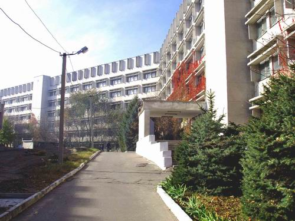

Подорож по Дніпру
Пам'ятки міста
-

Хімічний факультет ДНУ - краще місце в цьому світі!
Дніпро є старим (існує з 1776р.) славетним містом з великою Історією. Мабуть, найстарішим об'єктом є корпус і обладнання хімічного факультету ДНУ імені Олеся Гончара. Страшно уявити, скільки людей вже працювало там. Доторкаючись до піпеток, можна відчути зв'язок з людьми, яких вже і немає на цьому світі.. Іноді здається, що воно все настільки старовинне, що того диви і розпадеться в руках, як стара книга, що може розлетітися в пил під тиском столітть. Неймовірні відчуття! Крім того, багато наукових відкриттів відбулося за дверима цієї будівлі. Тут використовується дуже цікавий підхід до постановки експерименту: велика кількість реагентів тут прострочена, тому в ході хімічних перетворень утворюється не те, що очікувалося. Це і є наші наукові відкриття)
-
Трохи про цю видатну людину
Перед вами зараз знаходиться унікальний об'єкт, проф. Безпаленко. На жаль, наразі цей експонат знаходиться не в Дніпрі, але роках едак в 80-х ви б могли його зустріти просто на вкулицях нашого прекрасного міста. Якщо ви ще не знаєте (а за таке і по рожі отримати можна), ця персона, як він сам стверджує, є засновником гештальт-лінгвістики! Ця сфера настільки увійшла в наше повсякденне життя, шо сучасні люди, мабуть останні покоління чотири, вже не можуть уявити собі буття без неї.. До речі, Дніпро посідає друге місце в персональому рейтингу кращих міст Толькі! Тому це the best місто в Україні.
-

Набережна Дніпра - найдовша в Європі
Наша набережна довжиною в 23 км має багато цікавинок. Наприклад, центральна частина вулиці дуже добре підходить для спокійних прогулянок і насолодою ароматами Дніпра (річки) і привабливими видами усіляких там дерев. Якщо піти від центру в одну сторону, набережна переходить в жил.масив Перемогу, де є найкращі зразки радянської будівельної культури. Якщо ж піти в іншу, можна помилуватися дніпровськими заводами. Такими великими, старими і загадковими.. Ну, і можна пройти аромотерапію усілякими там речовинами. До речі, про Європу.. В нас не тільки найдовша набережна, а й найкоротша гілка метро. По-перше, вона одна, а по-друге, складається з шести станцій.